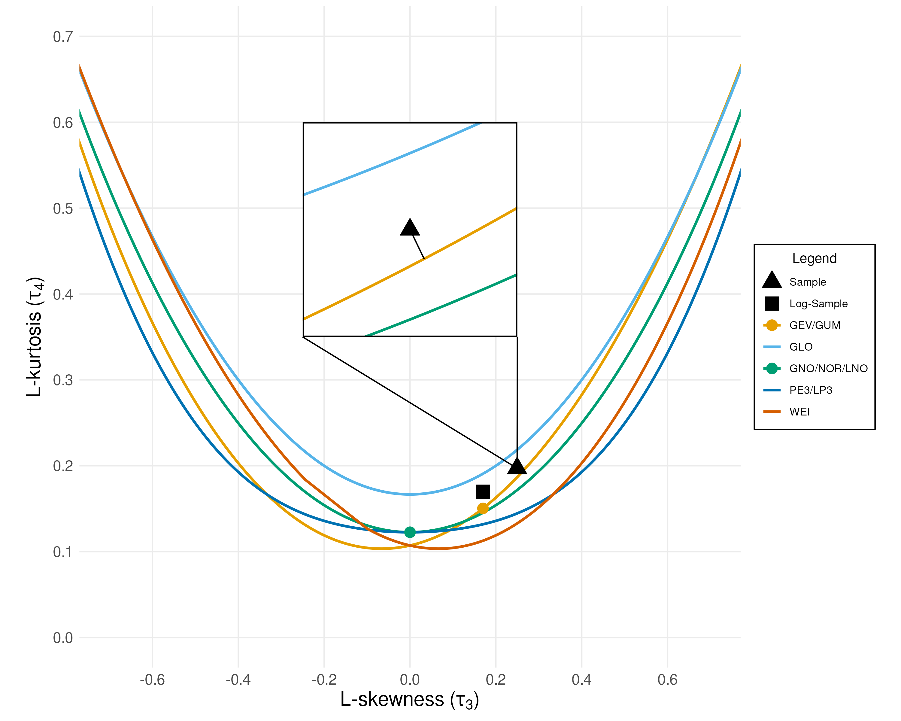

Model Selection
This module selects a statistical model for S-FFA or NS-FFA based on the annual maximum series.
- S-FFA: A time-invariant probability distribution is selected from the candidate distributions.
- NS-FFA: A distribution is chosen along with a nonstationary structure to capture its evolution over time. In piecewise NS-FFA, the series is segmented into subperiods, each modelled with either time-invariant or time-varying distributions.
The framework uses the L-moment ratio method to identify the best-fit distribution family by comparing sample L-moments with the L-moments of various distribution families.
For NS-FFA, the series is decomposed to isolate its stationary component following Vidrio-Sahagún and He (2022). This decomposed sample is then used for distribution selection, as in S-FFA.
An Introduction to L-Moments
Definition 1: The \(k\)-th Order Statistic of a statistical sample is its \(k\)-th smallest value.
Definition 2: The \(r\)-th Population L-moment \(\lambda_{r}\) is a linear combination of the expectation of the order statistics. Let \(X_{k:n}\) be the \(k\)-th order statistic from a sample of size \(n\). Then,
Definition 3: A Probability Weighted Moment (PWM) encodes information about a value's position on the cumulative distribution function. The \(r\)-th PWM, denoted \(\beta_{r}\), is:
For an ordered sample \(x_{1:n} \leq \dots \leq x_{n:n}\), the sample PWM is often estimated as:
Sample L-Moments (from PWMs) and L-Moment Ratios
The first four sample L-moments can be computed as linear combinations of the PWMs:
The L-moments are used to compute the Sample L-variance \(t_{2}\), Sample L-skewness \(t_{3}\) and the Sample L-kurtosis \(t_{4}\) using the following formulas:
Then, we compare these statistics, specifically the L-skewness and L-kurtosis to their theoretical values (given here) using one of three different metrics to select a distribution.
Note: Probability distributions with two parameters have constant L-skewness \(\tau_{3}\) and L-kurtosis \(\tau_{4}\) regardless of their parameters. The L-skewness and L-kurtosis of probability distributions with three parameters is a function of the shape parameter \(\kappa\). The notation \(\tau_{3}(\kappa)\) and \(\tau_{4}(\kappa)\) refers to the L-skewness and L-kurtosis curves for three parameter distributions.
Example Plot
Shown below are the L-moment curves of the GEV, GLO, GNO, PE3/LP3, and WEI distributions as well as the L-moment ratios of the two parameter distributions GUM and NOR/LNO. This L-moment diagram depicts the "L-distance" selection metric, which compares the euclidian distance between the sample and theoretical L-moment ratios. The inset shows that the GEV distribution (yellow line) has the closest L-moments to the data.

Selection Metrics
1. L-Distance
The Euclidean distance between the sample \((t_3, t_4)\) and theoretical \((\tau_3, \tau_4)\) for each candidate distribution. For 3-parameter distributions, this is the minimum distance along their L-moment ratio curve.
2. L-Kurtosis
The L-kurtosis method is only used for three-parameter probability distributions. First, the shape parameter \(\kappa^{*}\) such that \(t_{3} = \tau _{3}(\kappa ^{*})\) is identified. Then, the difference between the sample L-kurtosis and the theoretical L-kurtosis is computed using the metric \(|\tau_{4}(\kappa ^{*}) - t_{4} |\).
3. Z-statistic
The Z-statistic selection metric is calculated as follows (for three-parameter distributions):
- Fit the four-parameter Kappa (K4D) distribution to the sample.
- Generate \(N_{\text{sim}}\) bootstrap samples from the fitted K4D distribution.
- Calculate the sample L-kurtosis \(t_{4}^{[i]}\) of each synthetic dataset.
-
Calculate the bias and standard deviation of the bootstrap distribution:
\[ B_{4} = N_{\text{sim} }^{-1} \sum_{i = 1}^{N_{\text{sim} }} \left(t_{4}^{[i]} - t_{4}^{s}\right) \]\[ \sigma _{4} = \left[(N_{\text{sim} } - 1)^{-1} \left\{\sum_{i - 1}^{N_{\text{sim} }} \left(t_{4}^{[i]} - t_{4}^{s}\right)^2 - N_{\text{sim} } B_{4}^2\right\} \right] ^{\frac{1}{2}} \] -
Identify the shape parameter \(\kappa^{*}\) such that \(t_{3} = \tau _{3}(\kappa ^{*})\).
-
Use the bootstrap distribution to compute the Z-statistic for each distribution:
\[ z = \frac{\tau_{4} (\kappa ^{*}) - t_{4} + B_{4} }{ \sigma _{4}} \] -
Choose the distribution with the smallest Z-statistic.
Handling Nonstationarity
When nonstationarity is detected, the annual maximum series is decomposed before model selection. We consider three nonstationary scenarios that can be identified in EDA:
- Trend in mean only.
- Trend in standard deviation only.
- Trend in both mean and standard deviation.
Decomposition Steps
Scenario 1: Trend in mean
- Use Sen's Trend Estimator to approximate the slope \(b_1\) and intercept \(b_0\).
- Detrend: subtract the linear function \((b_{1} \cdot \text{Covariate})\) from the time series, where the covariate is a time index calculated using the formula \((\text{Years} - 1900) / 100\).
- Ensure positivity: if necessary, shift series by adding a constant such that \(\min(\text{data}) = 1\).
Scenario 2: Trend in standard deviation
- Generate a time series of standard deviations using the moving windows method.
- Use Sen's Trend Estimator to identify the slope \(c_{1}\) and intercept \(c_{0}\) of the trend in the standard deviations.
-
Normalize the data to have mean \(0\), then divide out the scale factor \(g_{t}\).
\[ g_{t} = \frac{(c_{1} \cdot \text{Covariate} ) + c_{0}}{c_{0}} \] -
Add back the long-term mean \(\mu\), and then ensure positivity as in Scenario 1.
Scenario 3: Trend in both mean and standard deviation
- Remove the linear trend in mean exactly as in Scenario 1.
- On that detrended series, generate a rolling‐window STD series and fit its trend.
- Divide the detrended data by the time-varying scale factor \(g_{t}\) (as in Scenario 2).
- Shift to preserve the series mean and ensure positivity.